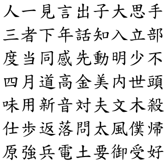
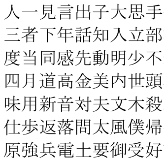

Ultimate Poor Man's Kanji Poster
If you don't know already, I'm learning Japanese by myself. I'll not get into the whole by yourself-classes discussion. You've got the rest of the internet for that matter.
If you're learning any CJK (not so much Korean I think), in one point or another you'll need this kanji/hanzi poster thingy, so you can highlight the kanji/hanzi you know just for the fun of it, competition, bragging, motivation, you name it. I've printed ('cause I'm poor, you know) many kanji posters. However, this weekend, I've created the "Ultimate Kanji Poster" (for me at least, I believe I'll not print any other for the time being).
Here are the download links. They're in .pdf format, A4 page size, with a 1.5 cm top margin (to write your kanji count progress or any notes) and 0.60cm right margin (for highlighted kanji count in that row, or any other characters). Comes in two different flavors:
Handwritten style, if you're feeling adventurous

Or Mincho style, for normal computing... ermm.. reading?

This "Ultimate Poor Man's Kanji Poster" sorts the kanji by frequency. Not newspaper frequency as you usually find, no my dear, it's the frequency from a word/kanji frequency program I've found online. This means that the only thing I've done was getting that list and putting it in a word processor program to make it look nice and exporting it to a PDF file. I take no credit. Also I deleted all the kanji with grading "only used in names" taken from another dictionary.
I only print the first two pages because these contain the most frequent kanji (2046. Each page has 1032 kanji, except the sixth).
Comments
How to comment
- Tweet with an URL to this post (
http://blog.quinzi.com.ar/kanji-poster/) - Write a post linking here and send me a Webmention.
- Commenting with disqus
El orden de los kanji lo hiciste vos? Del más frecuente al menos frecuente? O estos posters son “estandar” y siempre mantienen el mismo orden?
Leìste el artìculo? ahi dice donde lo saque =P
Pingback: Pro Tip: cartuchos | Intento de blog
aaaah, es que leí hasta las fotos, y me puse a mirar en mediafire los posters y después volví al post a comentar, me pasé x alto los dos últimos párrafos! Shame on me! (>_<")
Mira que en el primero, las fuentes son distintas, eh (como si te sirvieran XD)
Siiiiii, me di cuenta, en uno son handwriting y en el otro son de compu.
Imaginate que no entiendo ni jota, pero me gusta mirar! Hay dos o tres que ya los puedo individualizar, sólo me faltaría saber qué significan
Jin, ichi, miru, “hablar” ? Muy bueno! Gracias por compartirlo! Estoy viendo como me lo guardo…